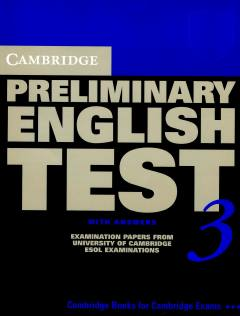

CPCambridge PET imtihoniga tayyorgarlik ko'rish uchun rasmiy testlar to'plami.
Ushbu kitob Cambridge ESOL imtihonlarining Preliminary English Test (PET) dasturi bo'yicha tayyorgarlik ko'rish uchun mo'ljallangan imtihon materiallarini o'z ichiga oladi. Nashr talabalar va o'qituvchilarga amaliy mashqlar bajarish hamda javoblar yordamida o'z bilimlarini tekshirish imkonini beradi.